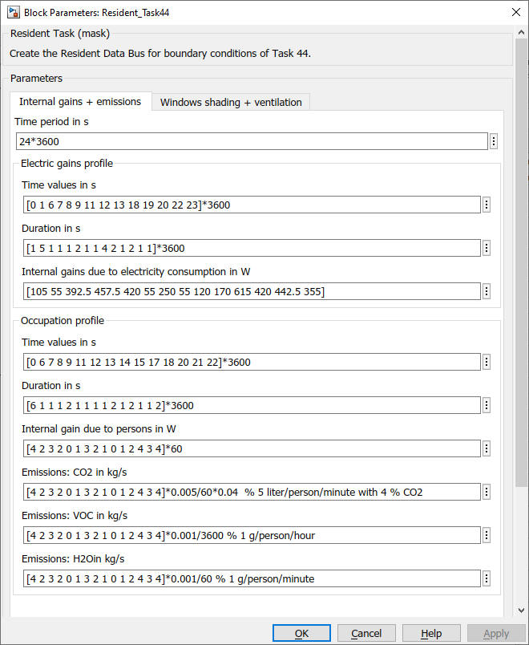
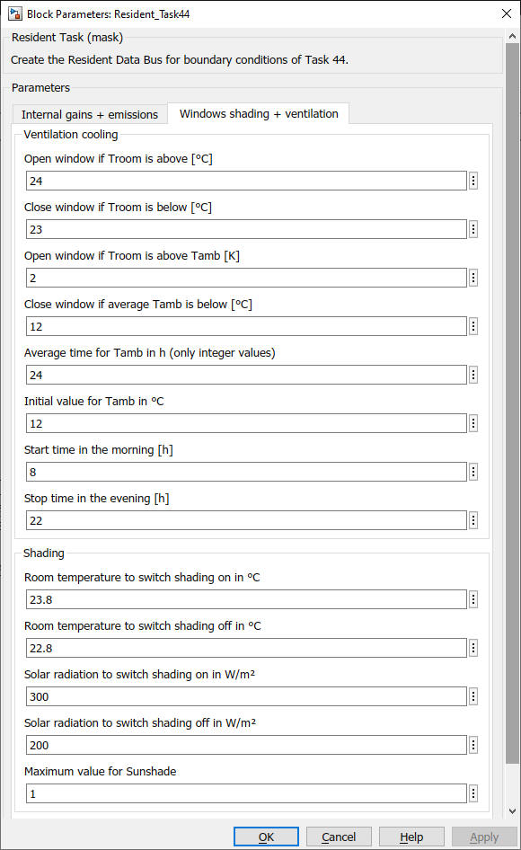

Resident_Task44
Path: CARNOT/Loads/Houses
Purpose
Model of the internal
gains, emissions, the window ventilation and the shading control for the
House_simple model as defined by the Task 44.
Description
A full description is available at [Dott, Haller, Ruschenburg, Ochs,
Bony :
The Reference Framework for System Simulations of the IEA SHC Task 44 / HPP
Annex 38 Part B: Buildings and Space Heat Load 2013].
Input:
Output:
Parameters and Dialog Box


Verifcation and Validation
See [Peter, Wintler, Dott 2014] and verfiy_HouseSimple.m in the verification folder of the model.
Literature
Andreas Peter, Christian Winteler, Ralf Dott : Implementation of the IEA SHC & HPP T44/A38 Boundary Conditions in Matlab/Simulink with CARNOT-blockset A Platform Independence Check for the IEA SHC Task 44 / HPP Annex 38 – Subtask C, Institut Energie am Bau - Fachhochschule Nordwestschweiz, 2014
Michel Y. Haller, Ralf Dott, Jörn Ruschenburg, Fabian Ochs, Jacques Bony: The Reference Framework for System Simulations of the IEA SHC Task 44 / HPP Annex 38 Part A: General Simulation Boundary Conditions A technical report of subtask C Report C1 Part A, 2013
Ralf Dott, Michel Y. Haller, Jörn Ruschenburg, Fabian Ochs, Jacques Bony : The Reference Framework for System Simulations of the IEA SHC Task 44 / HPP Annex 38 Part B: Buildings and Space Heat Load A technical report of subtask C Report C1 Part B, 2013
Characteristics
Direct Feedthrough Yes
Sample
time
Inherited
from driving block
States
none
Vectorized
No